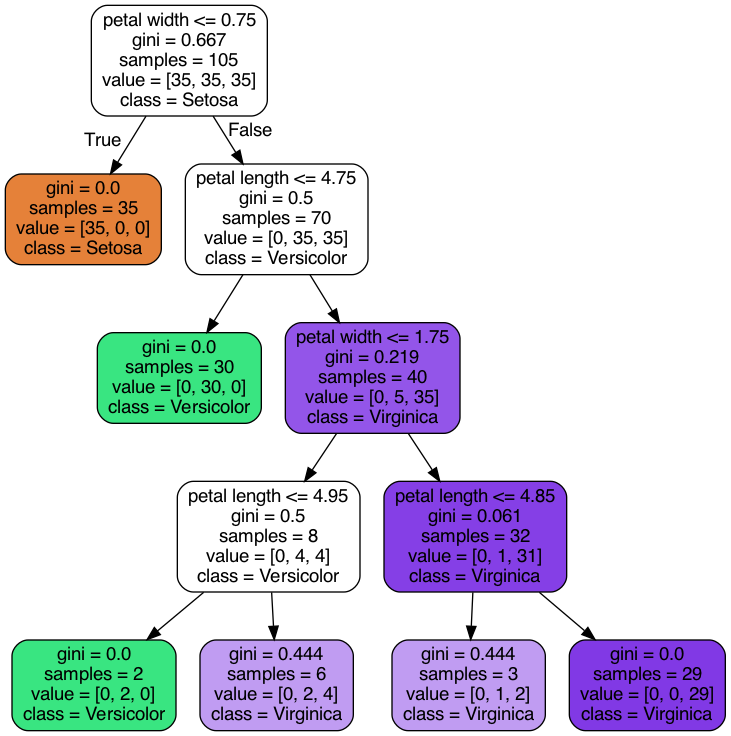

<!DOCTYPE html>
<html lang="en">
  <head>
    <meta charset="utf-8" />
    <meta name="viewport" content="width=device-width, initial-scale=1.0, maximum-scale=1.0, user-scalable=no" />

    <title>reveal-md</title>
    <link rel="shortcut icon" href="./favicon.ico" />
    <link rel="stylesheet" href="./dist/reset.css" />
    <link rel="stylesheet" href="./dist/reveal.css" />
    <link rel="stylesheet" href="./dist/theme/beige.css" id="theme" />
    <link rel="stylesheet" href="./css/highlight/base16/zenburn.css" />


  </head>
  <body>
    <div class="reveal">
      <div class="slides"><section  data-markdown><script type="text/template">IA & Ethics  
2023-10-17  
Kedge Business School  
thomas.lentali@gmail.com  
</script></section><section ><section data-markdown><script type="text/template"><!-- .slide: data-transition="fade" -->

93% Python  
<p class="fragment" data-fragment-index="1">57% SQL</p>
<p class="fragment" data-fragment-index="2">41%  R</p>
</script></section><section data-markdown><script type="text/template">
[[Source](https://businessoverbroadway.com/2020/06/29/usage-of-programming-languages-by-data-scientists-python-grows-while-r-weakens/)]
</script></section></section><section  data-markdown><script type="text/template"><!-- .slide: data-transition="zoom" -->

```python
num = int(input("Enter a number: "))
if (num % 2) == 0:
   print(f"{num} is Even"))
else:
   print(f"{num} is Odd")
```

```text
Enter a number: 43
43 is Odd
```
</script></section><section  data-markdown><script type="text/template"><!-- .slide: data-transition="fade" -->

### ✨Open Source✨

[Pandas](https://github.com/pandas-dev/pandas), [Numpy](https://github.com/numpy/numpy), [Scipy](https://github.com/scipy/scipy), [Statmodels](https://github.com/statsmodels/statsmodels), [Matplotlib](https://github.com/matplotlib/matplotlib), [Plotly](https://github.com/plotly), [NetworkX](https://github.com/networkx/networkx), [Nltk](https://github.com/nltk/nltk), [PySpark](https://github.com/apache/spark/tree/master/python/pyspark), [Pytest](https://github.com/pytest-dev/pytest), [Request](https://github.com/request/request), [SqlAlchemy](https://github.com/sqlalchemy/sqlalchemy), [Sqlite](https://github.com/sqlite/sqlite), [Tensorflow](https://github.com/tensorflow/tensorflow), [Pytorch](https://github.com/pytorch/pytorch), [Airflow](https://github.com/apache/airflow), [Luigi](https://github.com/spotify/luigi), [Poetry](https://github.com/python-poetry/poetry)... 
</script></section><section  data-markdown><script type="text/template"><!-- .slide: data-transition="zoom" -->

**Python Machine Learning tool :**  
[**Scikit Learn**](https://github.com/scikit-learn/scikit-learn)

<p class="fragment" data-fragment-index="1">Since 2011</p>
<p class="fragment" data-fragment-index="2">30 536 commits</p>
<p class="fragment" data-fragment-index="3">2 740 contributors</p>
</script></section><section  data-markdown><script type="text/template">
```python
from sklearn.datasets import load_iris
from sklearn import tree

iris = load_iris()
X, y = iris.data, iris.target
clf = tree.DecisionTreeClassifier()
clf = clf.fit(X, y)
```


</script></section><section  data-markdown><script type="text/template">
```python
from sklearn.datasets import load_iris
from sklearn.cluster import KMeans

iris = load_iris()
X = iris.data
kmeans_model = KMeans(n_clusters=3)
clusters = kmeans_model.fit_predict(X)
```


</script></section><section ><section data-markdown><script type="text/template">
#### From development to production


</br>

</script></section><section data-markdown><script type="text/template">
- Development 💻
- Staging 🖥️
- Production ☁️
</script></section></section></div>
    </div>

    <script src="./dist/reveal.js"></script>

    <script src="./plugin/markdown/markdown.js"></script>
    <script src="./plugin/highlight/highlight.js"></script>
    <script src="./plugin/zoom/zoom.js"></script>
    <script src="./plugin/notes/notes.js"></script>
    <script src="./plugin/math/math.js"></script>
    <script>
      function extend() {
        var target = {};
        for (var i = 0; i < arguments.length; i++) {
          var source = arguments[i];
          for (var key in source) {
            if (source.hasOwnProperty(key)) {
              target[key] = source[key];
            }
          }
        }
        return target;
      }

      // default options to init reveal.js
      var defaultOptions = {
        controls: true,
        progress: true,
        history: true,
        center: true,
        transition: 'default', // none/fade/slide/convex/concave/zoom
        slideNumber: true,
        plugins: [
          RevealMarkdown,
          RevealHighlight,
          RevealZoom,
          RevealNotes,
          RevealMath
        ]
      };

      // options from URL query string
      var queryOptions = Reveal().getQueryHash() || {};

      var options = extend(defaultOptions, {}, queryOptions);
    </script>


    <script>
      Reveal.initialize(options);
    </script>
  </body>
</html>
